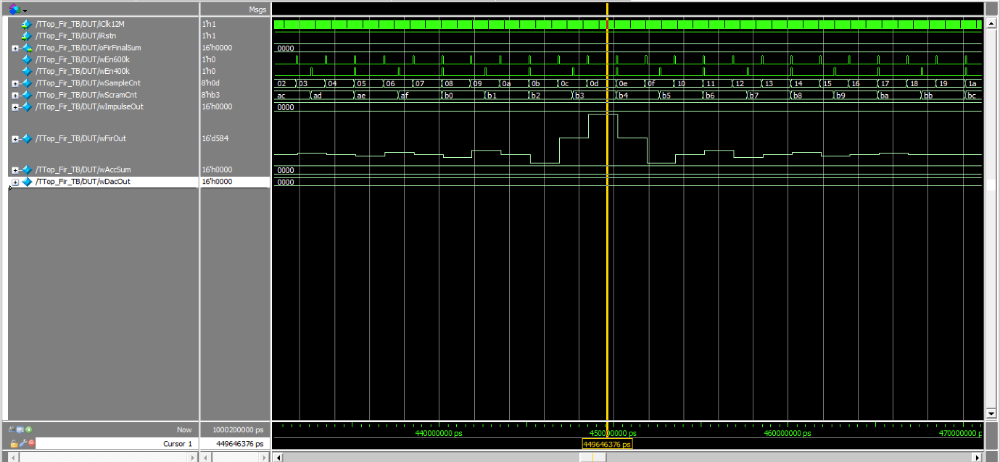

고정 계수(fixed-coefficient) FIR 필터는 설계 시점에 정해진 필터 특성 하나만 제공합니다. 저역통과·고역통과·대역통과 등 특성이 바뀔 때마다 하드웨어를 새로 설계해야 하는 게 비효율적이었습니다.
기본 Verilog 코드 작성, Waveform 확인, 보고서 작성을 맡았습니다. (팀장·발표는 한승조, Waveform 확인·발표는 최승완, Testbench 코드 작성은 정의찬이 각각 분담)
21-tap Multiply-Accumulate(MAC) 구조의 FIR 필터를 Verilog로 설계
필터 계수(coefficient)를 4개의 SRAM(SpSram10x16) 모듈에 저장해, 계수를 바꾸는 것만으로 필터 특성을 재구성할 수 있는 구조로 설계
Controller(FSM)로 “계수 업데이트 단계”와 “필터 연산 단계”를 분리 제어
Quartus·QuestaSim으로 시뮬레이션 및 Impulse Response Waveform 분석
FIR 연산이 진행되는 도중 계수를 바꾸면 tap마다 서로 다른 계수가 섞여서 waveform이 고르게 안 나오는 문제가 있었습니다.
계수 업데이트 구간과 필터 연산 구간을 완전히 분리된 타이밍으로 설계해서 해결했습니다 — 필터 연산 단계에서는 SRAM을 Read-only로, 계수 업데이트 단계에서는 Write-only로 동작하도록 FSM에서 통제했습니다.
Impulse Response Waveform 검증 결과, 계수가 정상적으로 로딩되고 FIR 구조에 오류가 없음을 확인했습니다.
출력 파형은 Kaiser window 기반 계수의 대칭 구조(Linear Phase FIR)를 그대로 보여주었습니다.